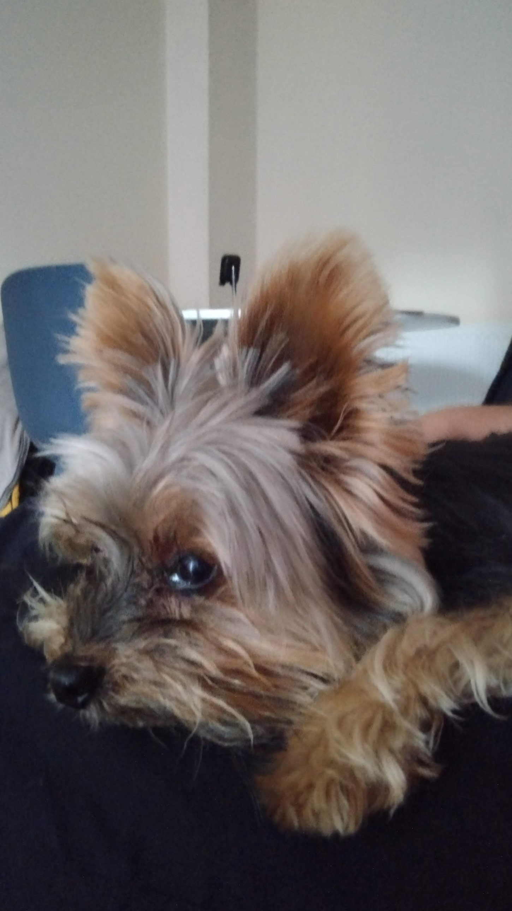
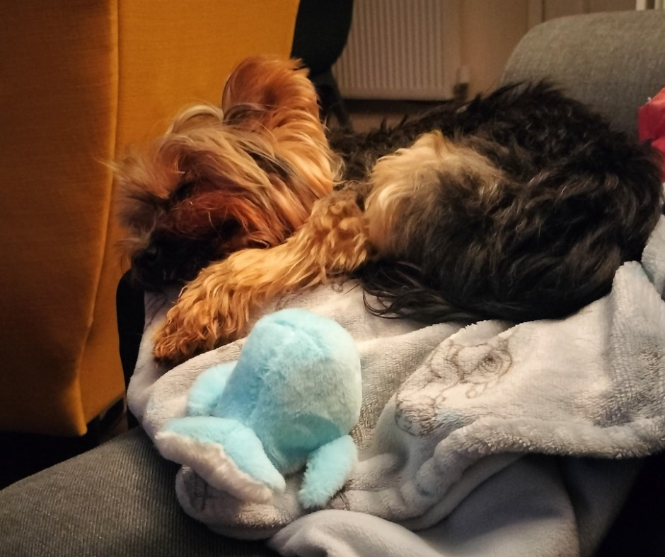

We all want our dogs to enjoy a long, healthy life — staying active, moving comfortably, and enjoying the things they love for as long as possible.
As I'm experiencing with Thor, my 12-year-old Yorkie, this becomes something you feel differently as they get older. There is something difficult about watching a dog you love grow old. You find yourself missing the activities you used to share, while trying to understand what they need from us now.
But here's what I've come to understand through both my clinical nutrition background and my work with dogs: some of those changes have a cause that rarely gets examined.
The dog who no longer jumps on the sofa. Who hesitates at the bottom of the stairs. Who used to bound ahead on walks and now trails behind.
We call it getting old. We adapt around it. We tell ourselves it's natural.
And it is natural — but natural doesn't mean inevitable. And it doesn't mean there's nothing we can do.
Because in many cases, what's driving those changes isn't simply age. It's something that, with the right knowledge, you can actually influence.
It starts in the food bowl.
This article is about what that is — and what you can do about it.
In this article I'll cover:
- Why muscle loss in older dogs starts earlier than most owners realise, and why it matters beyond strength
- Why protein is the most important and most underestimated nutrient for your senior dog, and what the research says
- How to read a pet food label for protein quality, not just protein content

Thor, aged 12.
The invisible decline: what's actually happening inside your dog's body
Your dog's body is in a constant process of renewal. Old and damaged proteins are broken down and replaced — this is called protein turnover, and it happens continuously throughout life.
In a young dog, the process is roughly balanced. In a middle-aged or older dog, the breakdown side accelerates and the rebuilding side slows. The result is a gradual, invisible loss of lean muscle mass — often beginning well before any outward sign appears.
This matters far more than most people are told.
Muscle isn't just about strength or athletic performance. Muscles are the shock absorbers of the skeleton. Every step your dog takes, every jump down from the sofa, every time they navigate the stairs — the muscles around their joints are doing the work of absorbing that impact. When those muscles weaken, the joints absorb it instead.
This is one of the main reasons osteoarthritis progresses so quickly in senior dogs. It isn't simply that joints wear down with age. The cushioning around those joints disappears first.
Weakening muscles also affect balance and proprioception — your dog's internal sense of where their body is in space. This is why older dogs slip on hard flooring, stumble going down steps, or become reluctant to jump onto furniture they've used for years.
A dog who becomes more sedentary, more anxious, more hesitant in environments they once navigated easily — that change is frequently rooted in a physical one. They've lost the physical confidence that came with stable, functioning muscles. And because we don't see the muscle declining, we assume our dog is simply "slowing down with age," or developing new anxieties, or changing temperament.
We adapt to it. We buy ramps. We stop going on longer walks. We mourn the dog they used to be.
But the starting point — the original, invisible driver of that chain of events — may be happening in the food bowl.
Why protein is the most important and most underestimated nutrient in your senior dog's diet
Of all the nutrients that influence how a dog ages, protein has the strongest research behind it.
Protein isn't simply about building muscle. It underpins immune function, tissue repair, hormone regulation, and enzyme production. In an older dog, it also becomes the primary lever for slowing muscle loss.
As dogs age, their ability to synthesise protein becomes less efficient. Their bodies need more dietary protein to achieve the same result — not less. And yet many commercial senior dog foods contain lower protein than standard adult maintenance formulas, based on concerns that research has since revised.
One study comparing young adult and senior dogs on either a 16% or 32% protein diet found that after seven weeks, senior dogs on the higher-protein diet had measurably increased lean body mass compared to those on the lower-protein diet. This isn't a marginal effect. It's a meaningful difference in body composition — driven by what was in their bowl.
Current evidence suggests senior dogs should receive at least 25% of their calories from protein — typically at least 7g of protein per 100kcal of metabolisable energy. Many commercial senior diets fall well short of this. One popular brand I analysed recently provided approximately 4.72g per 100kcal — less than 70% of that target, despite carrying prominent "senior" branding on the packaging.
One amino acid worth highlighting specifically is lysine. When balanced with appropriate calorie and protein ratios, lysine helps slow the breakdown of muscle tissue and supports the preservation of lean body mass. Good dietary sources include chicken, lean beef, turkey, salmon, cod, sardines, and eggs.
The amount of protein matters. So does the quality — and this is where most commercial senior diets fall shortest.
What the bag isn't telling you
Named proteins versus vague terms
Look at the ingredient list and ask: do I know exactly what type of protein my dog is eating?
You want to see specific, named proteins — Fresh Chicken, Dehydrated Salmon, Lamb — rather than "Meat and Animal Derivatives," "Poultry Meal," or simply "Fish." Vague collective terms give you no way of knowing the species, what type of fish and the quality of the raw material.
This matters for any dog — but it matters especially for senior dogs. Older dogs are more likely to have developed food sensitivities or allergies over time, and vague ingredient terms make it impossible to identify or avoid a problematic protein source.
The moisture problem
Ingredients are listed by weight before processing — and that weight includes water. Fresh meat is approximately 70% moisture. Dried or dehydrated ingredients are far more concentrated.
This means "Fresh Chicken (33%)" as a first ingredient may actually be contributing less protein to the finished food than "Dried Chicken (18.7%)" listed second. The numbers are real, but the comparison isn't straightforward without understanding how moisture affects them.
Animal protein versus plant protein
Dogs require specific essential amino acids they cannot produce themselves. Animal proteins — meat, fish, eggs — provide a complete profile of these amino acids. Plant proteins such as soya meal, corn gluten meal, and pea protein are frequently used to increase the crude protein figure on the label, but they don't deliver the same nutritional value for a dog's physiology.
Many manufacturers compensate by adding synthetic amino acids after processing. A food can therefore have plant proteins high on the ingredient list and still meet amino acid requirements on paper — because the synthetic additions are making up the gap. That gap exists, even when the label doesn't acknowledge it.
A note on digestibility
Two products can have identical ingredient lists and identical guaranteed analysis figures and yet be substantially different in digestibility — meaning how much the dog can actually absorb and use. Digestibility values above 82% are considered high quality; above 88%, excellent. Below 75% is poor. Many manufacturers measure digestibility routinely but are not required to publish it. Some do, on their websites. It's worth looking.
A food low in digestibility leads to increased stool volume, flatulence, loose stools, and dull coat over time. A highly digestible food produces firm, well-formed stools and supports long-term skin, coat, and weight maintenance. These are observable indicators — not perfect measures, but useful ones.
A note on kidneys: addressing a concern that still circulates
You may have come across the idea that senior dogs should eat less protein to protect their kidneys as they age. It's a reasonable-sounding concern.
The research, however, tells a more specific story.
Studies examining whether higher protein intake causes kidney damage in healthy older dogs have consistently found that it does not. Protein does not adversely affect kidney function in dogs without pre-existing kidney disease. Restricting protein in a healthy senior dog — without a clinical reason to do so — doesn't protect their kidneys. What it can do is make maintaining lean body mass significantly harder, potentially accelerating the very muscle loss we're trying to prevent.
Dogs with diagnosed chronic kidney disease are a different situation entirely. They may require specific dietary modifications — particularly relating to phosphorus, and in some cases protein — tailored to the individual dog and the stage of disease.
Where nutrition and behaviour meet
This is the part of my work that most surprises people: the connection between what a dog eats and how they behave.
We tend to treat nutrition and behaviour as separate concerns. If a dog is reactive, we tend to look only at their training. If a dog is gaining weight or having loose stools, we only look at their food. But in practice, these things are not separate systems — they feed into each other continuously.
A dog whose protein intake has been inadequate for months may have lost significant muscle. That affects balance and physical confidence — and reduced confidence shows up as reluctance to walk, more hesitancy to explore, or more anxiety in situations they previously managed comfortably.
A dog in pain may growl or snap when touched. When these things get labelled "laziness," "temperament," or "just age," the physical contributor goes unexamined entirely.
My background combines advanced canine nutrition training with clinical dietetics — the use of nutrition to prevent, manage, and treat health conditions. Almost every disease and health condition is affected by what we eat, whether through the direct effects of inadequate calories, the downstream consequences of micronutrient deficiencies, or the cumulative impact of chronic low-grade nutritional inadequacy.
I bring that same clinical lens to dogs. Because when we look at what they are eating — not just whether they're eating — we often find the beginning of an explanation for what we're seeing in their behaviour.
What better looks like
A senior dog with appropriate protein intake, from quality, digestible sources, maintains lean body mass more effectively. That means:
- Better shock absorption at the joints — slower osteoarthritis progression
- More stable balance and proprioception — more confidence on different surfaces and in different environments
- Maintained muscle strength — continued ability to do the activities that give daily life its quality
- A body better equipped to manage illness, recover from injury, and maintain healthy immune function

You don't get those years back once the decline is entrenched. But in many cases, you can meaningfully slow it — sometimes reverse aspects of it — if you act before the visible signs have already compounded.
A note on independence
I work independently, through my practice, Paw Connection. I have no commercial relationships with pet food manufacturers and no financial interest in any brand or product.
That matters here — because when I analyse a food label, I'm drawing on advanced canine nutrition training and bringing the same impartiality I developed through years of clinical dietetics practice. Not to sell you something. Just to give you an honest picture.
What you can do next
Unfortunately, we can't stop our dogs from getting older. But we can make informed choices about how we support their health along the way.
If your dog is over seven and you're wondering whether they're getting everything they need from their current food, you don't have to figure it all out alone.
I offer a free discovery call where we can talk through your concerns, understand your dog's individual circumstances and explore how nutritional support might help.
Because the goal isn't just to add more years to your dog's life. It's to help them enjoy those years with more comfort and confidence — so you can feel more confident about the choices you're making and spend more time enjoying life together.
Book your free discovery call →Enjoyed this article?
Subscribe to receive new articles by email. I share thoughtful, evidence-informed guidance to help you understand your dog's nutrition, behaviour and overall health.
Subscribe →References
Blanchard G, Priymenko N, Oh W-S. (2025). Nutrition and aging in dogs and cats: assessment and dietary strategies. Journal of Veterinary Science, 26(Suppl 1), S96–S124. https://doi.org/10.4142/jvs.25222
Laflamme DP. (2008). Pet food safety: dietary protein. Topics in Companion Animal Medicine, 23(3), 154–157. https://doi.org/10.1053/j.tcam.2008.04.009